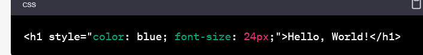
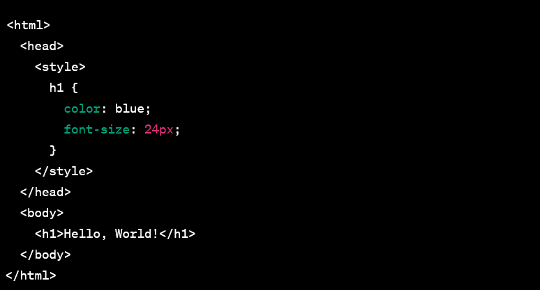
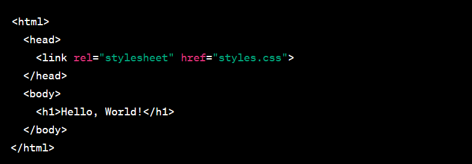

Using CSS, you can control the color of the text, the style of fonts,
the spacing between paragraphs, how columns are sized and laid out,
etc. CSS saves time − You can write CSS once and then reuse the same
sheet in multiple HTML pages.
BENEFITS OF USING CSS:
1) Faster Page Speed. More code means slower page speed...
2) Better User Experience. CSS not only makes web pages easy on the
eye, it also allows for user-friendly formatting...
3) Quicker Development Time...
4) Easy Formatting Changes...
5) Compatibility Across Devices.
QUE:-2 What are the disadvantages of CSS ?
ANS:2
CSS, CSS 1 up to CSS3, result in creating of confusion among web
browsers. There are a few downsides while using CSS. One must
know these disadvantages so that he or she is aware and takes care of
them while designing a website.
1. Confusion due to many CSS levels
Beginners are more vulnerable to this issue. They might get confused
while opting to learn CSS as there are many levels of CSS such as
CSS2, CSS3, etc.
2. Cross-Browser Issues
Different browsers work differently. So, you have to check that
changes implemented in the website via CSS codes are reflected
properly among all browsers.
3. Security Issues
Security is important in today’s world driven by technology and data.
One of the major disadvantages of CSS is that it has limited security.
4. Extra Work for Developers
Design services are required to consider and test all CSS codes across
different browsers for compatibility. Due to developers testing
compatibility for different browsers, their workload increases.
QUE: 3 What is the difference between CSS2 and CSS3 ?
ANS:3
Unlike CSS2, which was comprised of a single document, CSS3 has its
specifications divided into many individual modules, which makes CSS3
a whole lot easier to handle. With CSS3, the designers can now use
special fonts, like those available in Google Fonts and Typecast.
Selectors:
CSS3 introduces several new selectors, including attribute selectors,
structural pseudo-classes, and negation
pseudo-class. These selectors allow you to select elements based on
their attributes, position, and other characteristics.
Box model:
In CSS3, you can use the box-sizing property to change the way the
width and height of an element are calculated. This
allows you to include padding and borders in the calculation, which
can make layout and design easier.
Color:
CSS3 introduces new color options, including HSL and RGBA. HSL allows
you to specify colors using hue, saturation, and
lightness, while RGBA allows you to specify colors using red, green,
blue, and alpha values.
QUE: 4 Name a few CSS style components.
ANS:4
there are many css style components.they are in their manners.
CSS building blocks.
CSS selectors.
Type, class, and ID selectors.
Attribute selectors.
Pseudo-classes and pseudo-elements.
Combinators.
Cascade, specificity, and inheritance.
Cascade layers.
QUE: 5 What do you understand by CSS opacity ?
ANS: 5
The opacity CSS property sets the opacity of an element. Opacity is
the degree to which content behind an element is hidden, and is the
opposite of transparency.
Here's an example of how to use the CSS opacity property:
EXAMPLE:
This is some text with a semi-transparent background.
In this example, we have a div element with a black background color
(#000000) and an opacity of 0.5.
This is some text with a semi-transparent background.
In this example, we're using the rgba color format to set the background
color to black with an opacity of 0.5. The color property is set to white
to ensure that the text is readable.
QUE: 6 How can the background color of an element be changed ?
ANS:6
This is some text with a red background.
In this example, we have a div element with a red background color
applied using the background-color property. Any text or other
elements within the div will appear on top of the red background.
You can also set the background color using a CSS class or ID
selector, like this:
This is some text with a blue background.
This is some text with a green background.
In this example, we've defined two CSS selectors: .my-class and
#my-id. The background-color property is set differently for each
selector, so any elements with that class or ID will have a different
background color.
QUE:7 How can image repetition of the backup be controlled ?
ANS: 7
Image repetition of the background can be controlled using the
background-repeat property in CSS. This property specifies whether and
how a background image should be repeated within the element's
background. There are four possible values for background-repeat:
repeat: the image is repeated both horizontally and vertically
(default).
repeat-x: the image is repeated only horizontally.
repeat-y: the image is repeated only vertically.
no-repeat: the image is not repeated at all.
Here's an example of how to use the background-repeat property:
EXAMPLE:
This is some text with a background image that doesn't repeat.
In this example, we have a div element with a background image
specified using the background-image property. We've also set
background-repeat: no-repeat, which means that the image will be
displayed only once and not repeated.
If you want to repeat the image, you can set the background-repeat
property to repeat, repeat-x, or repeat-y. Here's an example:
This is some text with a background image that repeats only
horizontally.
QUE: 8 What is the use of the background-position property?
ANS: 8
The background-position property in CSS is used to set the initial
position of a background image within an element's background. This
property allows you to control where the background image is
positioned relative to the element's borders, and can be useful when
you need to align an image with specific parts of the element.
Here's an example of how to use the background-position property:
EXAMPLE:
This is some text with a background image positioned at 20 pixels
from the left and 70% from the top.
In this example, we're using two values for background-position: 20px
for the horizontal position and 50% for the vertical position. This
means that the background image will be positioned 20 pixels from the
left edge of the element and 50% from the top edge of the element.
QUE:9 Which property controls the image scroll in the background ?
ANS: 9
The property that controls the scrolling of a background image in CSS
is called background-attachment. It specifies whether the background
image should scroll with the content or remain fixed in place as the
user scrolls through the content. There are two possible values for
background-attachment:
scroll:
background image will scroll with the content (default).
fixed:
the background image will remain fixed in place as the user scrolls
through the content.
Here's an example of how to use the background-attachment property:
EXAMPLE:
This is some text with a fixed background image.
In this example, we have a div element with a background image
specified using the background-image property. We've also set
background-attachment: fixed, which means that the background image
will remain fixed in place as the user scrolls through the content.
If you want the background image to scroll with the content, you can
set the background-attachment property to scroll. Here's an example:
This is some text with a scrolling background image.
QUE: 10 Why should background and color be used as separate properties ?
ANS:10
In CSS, background-color and color are two separate properties used to
style the background and text content of an element, respectively.
It's important to use them as separate properties because they control
different aspects of the element's appearance and have different
default values.
Here's an example of how to use the background-color and color
properties separately:
EXAMPLE:
This is some text with a light gray background and dark gray text.
In this example, we've set the background-color property to #f5f5f5,
which gives the element a light gray background color. We've also set
the color property to #333, which gives the text inside the element a
dark gray color.
QUE:11 How to center block elements using CSS1 ?
ANS:11
In CSS, there are different ways to center block-level elements both
horizontally and vertically. Here are some methods to center block
elements horizontally using CSS:
Method 1: Using auto margin
One way to center a block element horizontally is by setting the left
and right margins to auto. Here's an example:
EXAMPLE:
This block element is centered horizontally using auto margin.
In this example, we've set the width and height of the div element to
200 pixels and given it a gray background color. By setting margin: 0
auto;, we're telling the browser to automatically calculate the left
and right margins, which effectively centers the element horizontally
within its parent container.
METHOD:2 Using text-align
Another way to center a block element horizontally is by setting the
text-align property of the parent container to center. Here's an
example:
This block element is centered horizontally using text-align.
In this example, we've set the text-align property of the parent
container to center. This will center any inline or inline-block
level elements within the container. We've also set the display
property of the child div element to inline-block, which allows us
to set the width and height of the element while still allowing it
to be centered horizontally.
QUE:12 How to maintain the CSS specifications...
ANS:12
Maintaining CSS specifications is important for ensuring cross-browser
compatibility, Here are some best practices for maintaining CSS
specifications:
1.Use consistent naming conventions: Use a consistent naming
convention for CSS selectors to make it easier to read and maintain
the code. For example, use hyphens to separate words in class names
(e.g. .nav-bar), or use BEM (Block Element Modifier) naming
conventions.
2.Avoid inline styles: Inline styles can make it difficult to maintain
and update the CSS code. Instead, use external style sheets or
internal style sheets to keep the CSS separate from the HTML.
3.Use shorthand properties: Shorthand properties can help reduce the
amount of CSS code and make it easier to maintain. For example,
instead of writing padding-top: 10px; padding-right: 20px;
padding-bottom: 10px; padding-left: 20px;, you can use the shorthand
padding: 10px 20px;
4.Use comments: Use comments to explain the purpose and context of CSS
code, and to make it easier to understand and maintain the code. For
example:
/* Navigation menu */ .nav-bar { ... }
5.Validate the CSS code: Use a CSS validator to check for errors and
ensure that the CSS code meets the specifications.
Here's an example of CSS code that follows these best practices:
/* Reset styles */
html, body, div, span, applet, object, iframe,
h1, h2, h3, h4, h5, h6, p, blockquote, pre,
a, abbr, acronym, address, big, cite, code,
del, dfn, em, img, ins, kbd, q, s, samp,
small, strike, strong, sub, sup, tt, var,
b, u, i, center,
dl, dt, dd, ol, ul, li,
fieldset, form, label, legend,
table, caption, tbody, tfoot, thead, tr, th, td
/* Use comments */
/* Main content area */br .content { ... }
/* Validate the CSS code */
QUE:13 What are the ways to integrate CSS as a web page ?
ANS:13
There are several ways to integrate CSS into a web page. Here are some
of the most common methods with examples:
EXAMPLE:
1.Inline styles: Inline styles are CSS styles that
are directly applied to HTML elements using the style attribute.
Here's an example:
Hello, World!
In this example, the color and font-size properties are applied
directly to the h1 element using inline styles.

2.Internal styles: Internal styles are CSS styles
that are included within the HTML document using the < style> tag.
Here's an example:
Hello, World!
In this example, the CSS styles for the h1 element are included within
the < style> tag in the < head> section of the HTML document.

3.External styles: External styles are CSS styles
that are included in a separate CSS file and linked to the HTML
document using the < link> tag. Here's an example:
Hello, World!
In this example, the CSS styles are included in an external file
called styles.css, which is linked to the HTML document using the < link> tag in the < head> section.

QUE:14 what is embedded style sheets.
ANS:14
Embedded style sheets are CSS styles that are included within an HTML
document using the < style> tag. Here's an example:
EXAMPLE:
Hello, World!
This is a paragraph.
In this example, the CSS styles for the h1 and p elements are included
within the < style> tag in the < head> section of the HTML document.
The styles define the color and font size of the headings and
paragraphs, respectively.
QUE:15 What are the external style sheets ?
ANS:15
External style sheets are CSS styles that are included in a separate
CSS file and linked to the HTML document using the
tag.
Here's an example:
EXAMPLE:
both example are same but show by different way...
This is a paragraph.
In this example, the CSS styles are included in an external file
called styles.css, which is linked to the HTML document using the
tag in the < head> section. The href attribute specifies the
location of the external CSS file.
QUE:16 What are the advantages and disadvantages of using external style sheets ?
ANS:16
Advantages of using external style sheets:
Reusability: External style sheets can be used across multiple web pages, making
it easier to maintain and update the styling of your website.
Consistency: Using an external style sheet ensures that the styling of your
website is consistent across all pages, helping to create a professional and polished look.
Faster page load times: External style sheets can be cached by the browser,
reducing the amount of data that needs to be downloaded on subsequent pages, resulting in faster page load
times.
Separation of concerns: External style sheets separate the presentation of your
website from its content, making it easier to manage and update your website.
Disadvantages of using external style sheets:
Increased HTTP requests: Using an external style sheet requires an additional HTTP
request to download the file, which can increase page load times.
Dependency: If the external style sheet fails to load, the website may not be
displayed correctly, which can affect user experience.
Learning curve: External style sheets may require a learning curve to use
effectively, especially for beginners.
Here's an example to illustrate the advantages and disadvantages of using external style sheets:
Hello, World!
This is a paragraph.
QUE:17 What is the meaning of the CSS selector ?
ANS:17
A CSS selector is a pattern that matches one or more elements in an HTML document. The selector is used to define which elements the CSS rules should be applied to. Here's an example of a CSS selector:
h1 {
color: blue;
font-size: 24px;
}
in this example, h1 is a selector that matches all h1 elements in the HTML document. The CSS rules within the curly braces {} define the styling for the h1 elements.
QUE:18 What are the media types allowed by CSS ?
ANS:18
CSS allows you to specify different styles for different media types. Here are the media types that are allowed by CSS:
all:
Applies to all devices and media types.
print:
Applies to printers or documents viewed in print preview mode.
screen:
Applies to computer screens, tablets, smart phones, and other devices that have a screen.
speech:
Applies to screen readers and other devices that read the page out loud.
BY USING MEDIA TYPES, YOU MADE A WEBSITE RESPONSIVE....
QUE:19 What is the rule set ?
ANS:18
A rule set in CSS is a collection of one or more rules that specify how HTML elements should be styled.
Here's an example of a CSS rule set:
In this example, h1 is the selector that identifies the h1 element. The curly braces {} enclose the declarations, which specify the font size, color, and margin bottom of the h1 element.
CSS rule sets can also contain multiple selectors separated by commas, allowing you to apply the same styles to multiple elements. For example:
/IMAGE/Screenshot 2023-04-24 173213.png)
/IMAGE/Screenshot 2023-04-24 173247.png)